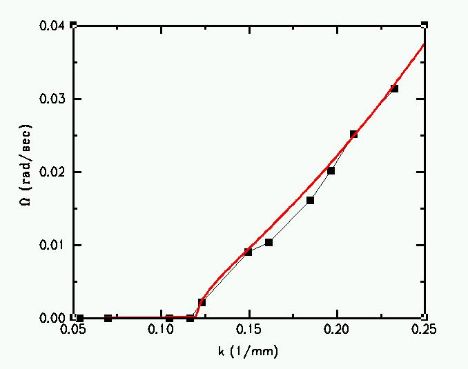

Stability analysis
Small perturbations are unstable for long wavelength (small k) and decay and oscillate for short wavelengths (large k). Below the dispersion relation (frequency vs wavenumber) is shown.
